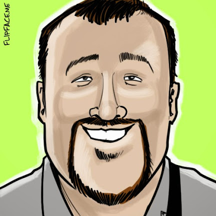

Who is Joe Steinbring?
I am an application developer with more than six years of experience within public and private sector organizations. I have worked on domestic and international projects for organizations such as the Kohler Company, the University of Wisconsin - Milwaukee, Ann Sacks, the Mandel Group, Artisan Partners, and Red Arrow USA. I possess an advanced skill-set that is allows me to create maintainable, holistic business solutions.
Vital Statistics
- Technologies Previously Leveraged
-
- ColdFusion
- Railo
- JavaScript
- jQuery
- PhoneGap
- MySQL
- MS SQL
- Oracle RDBMS
- Past/Present Roles
-
- Senior Application Developer at Starkmedia
- ColdFusion Developer at Kohler Company
- Senior Web Application Developer at UW-Milwaukee
- Degrees
-
- MBA from Cardinal Stritch University
- BBA from University of Wisconsin, Milwaukee